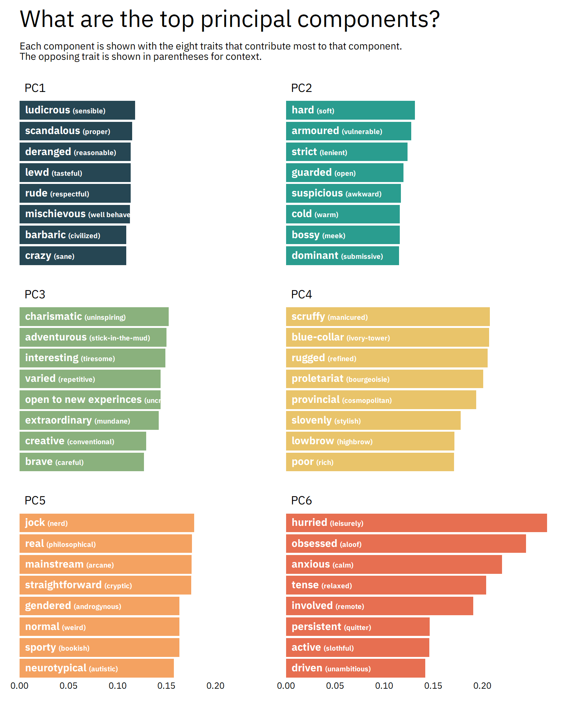

In this post, we’re going to apply Principal Component Analysis (PCA) to a dataset of fictional character personalities.
PCA is a common technique for dimensionality reduction, which you might want to do if you are, say, trying to put together a classification model and you have a dataset with a lot of variables.
The dataset we’re using is of crowdsourced scores of personality traits for 800 fictional characters from books/movies/TV shows like Game of Thrones, Pride and Prejudice, and The Lion King. The data comes from the Open-Source Psychometrics Project’s online “Which Character” personality quiz. You can learn more about that here.
library(tidyverse) # For data manipulation
library(tidymodels) # For PCA
library(tidytext) # For reorder_within()
library(extrafont) # For custom fonts on graphs
library(glue) # For creating strings from multiple pieces
library(ggtext) # For fine-grained text formatting
library(plotly) # For interactive graphs
# These are to make tables look nice on the website
# You probably won't need them
library(knitr)
library(kableExtra)
theme_set(theme_void())
personalities <- read_tsv("https://raw.githubusercontent.com/tacookson/data/master/fictional-character-personalities/personalities.txt")
Let’s look at an example character: Captain Jean-Luc Picard from Star Trek: The Next Generation.
personalities %>%
filter(character_name == "Jean-Luc Picard") %>%
head(8) %>%
arrange(mean) %>%
kable(format = "html") %>%
kable_styling()| character_code | fictional_work | character_name | spectrum | spectrum_low | spectrum_high | mean | ratings | sd | is_emoji |
|---|---|---|---|---|---|---|---|---|---|
| TNG/1 | Star Trek: The Next Generation | Jean-Luc Picard | BAP5 | charming | awkward | -33.9 | 15 | 14.6 | FALSE |
| TNG/1 | Star Trek: The Next Generation | Jean-Luc Picard | BAP7 | intellectual | physical | -28.3 | 15 | 23.9 | FALSE |
| TNG/1 | Star Trek: The Next Generation | Jean-Luc Picard | BAP8 | strict | lenient | -23.8 | 14 | 19.7 | FALSE |
| TNG/1 | Star Trek: The Next Generation | Jean-Luc Picard | BAP4 | masculine | feminine | -23.2 | 9 | 24.1 | FALSE |
| TNG/1 | Star Trek: The Next Generation | Jean-Luc Picard | BAP3 | cheery | sorrowful | 2.6 | 15 | 21.1 | FALSE |
| TNG/1 | Star Trek: The Next Generation | Jean-Luc Picard | BAP1 | playful | serious | 35.6 | 14 | 14.4 | FALSE |
| TNG/1 | Star Trek: The Next Generation | Jean-Luc Picard | BAP2 | shy | bold | 42.2 | 14 | 9.3 | FALSE |
| TNG/1 | Star Trek: The Next Generation | Jean-Luc Picard | BAP6 | lewd | tasteful | 42.8 | 12 | 9.6 | FALSE |
The main fields we’re interested in are spectrum_low, spectrum_high, and mean:
mean is a score (from -50 to +50), where a score closer to -50 means the character is more like the spectrum_low trait and a score closer to +50 means the character is more like the spectrum_high traitIf we look at some of Captain Picard’s strongest traits – that is, close to -50 or +50 – we see that he is charming and intellectual (low scores corresponding to spectrum_low), as well as bold and tasteful (high scores corresponding to spectrum_high). That rings true to me. I would certainly use those words to describe our dear Captain.
Most of the other fields are to identify who the character is and what fictional world they come from. We also have the number of ratings (ratings) and standard deviation (sd) for that character-spectrum combination. And finally, we have a helper column, is_emoji that tells us if the traits on each end of the spectrum are emojis instead of words.
Juuuust to make sure this data checks out – and because I’m really curious – let’s look at some more examples from Pride and Prejudice and The Lion King. We’ll look each character’s eight strongest traits. I’ve included the trait on the opposite end of the spectrum in parentheses for reference.
pride_palette <- c("#19313b", "#3b636b", "#bbb6a2",
"#ffc277", "#bc652f", "#472411")
pride_example <- personalities %>%
filter(!is_emoji,
fictional_work == "Pride and Prejudice",
character_name %in% c("Elizabeth Bennet", "Jane Bennet", "Lydia Bennet",
"Mr. Darcy", "Mr. William Collins", "George Wickham")) %>%
mutate(character_name = ifelse(character_name == "Mr. William Collins", "Mr. Collins", character_name)) %>%
group_by(character_name) %>%
top_n(8, abs(mean)) %>%
ungroup() %>%
mutate(spectrum_label = ifelse(mean > 0,
glue("{spectrum_high}<br><span style='font-size:8pt'>({spectrum_low})</span>"),
glue("{spectrum_low}<br><span style='font-size:8pt'>({spectrum_high})</span>")),
mean = abs(mean),
spectrum_label = reorder_within(spectrum_label, mean, character_name))
pride_example %>%
ggplot() +
geom_col(aes(mean, spectrum_label, fill = character_name), show.legend = FALSE) +
geom_vline(xintercept = seq(0, 50, by = 10), colour = "#FFF1E6", size = 0.1) +
scale_y_reordered() +
scale_fill_manual(values = pride_palette) +
expand_limits(x = c(0, 50)) +
facet_wrap(~ character_name, scales = "free_y") +
labs(title = "Pride and Prejudice",
caption = "Visualization: @alexcookson | Data: Open Source Psychometrics Project") +
theme(plot.title = element_text(family = "JaneAusten", face = "bold", size = 30,
hjust = 0.5, margin = margin(t = 10, b = 20)),
plot.background = element_rect(fill = "#FFF1E6", colour = NA),
plot.margin = margin(10, 10, 10, 10),
plot.caption = element_text(family = "Sylfaen", size = 8, colour = "grey50", margin = margin(t = 10)),
strip.text = element_text(family = "JaneAusten", size = 12, margin = margin(b = 10)),
axis.text.x = element_text(family = "Sylfaen", size = 10, hjust = 0.5),
axis.text.y = element_markdown(family = "Sylfaen", size = 11, hjust = 1))
Some traits are pretty flippant, like Elizabeth Bennet’s top trait, “treasure”, which has “trash” at the other end of the spectrum. Keep in mind that this data is from an online quiz, not a rigorous scientific study – it’s just a bit of fun!
The traits for the rest of the characters are spot-on: selfish George Wickham, kind Jane, foolish Lydia, awkward Mr. Collins, and rich and reserved Mr. Darcy.
lion_king_palette <- c("#FFBA08", "#FCA311", "#E85D04",
"#DC2F02", "#791901", "#38160D")
lion_king_example <- personalities %>%
filter(!is_emoji,
fictional_work == "The Lion King") %>%
group_by(character_name) %>%
top_n(8, abs(mean)) %>%
ungroup() %>%
mutate(spectrum_label = ifelse(mean > 0,
glue("{spectrum_high}<br><span style='font-size:8pt'>({spectrum_low})</span>"),
glue("{spectrum_low}<br><span style='font-size:8pt'>({spectrum_high})</span>")),
mean = abs(mean),
spectrum_label = reorder_within(spectrum_label, mean, character_name))
lion_king_example %>%
ggplot() +
geom_col(aes(mean, spectrum_label, fill = character_name), show.legend = FALSE) +
geom_vline(xintercept = seq(0, 50, by = 10), colour = "#FFFBEB", size = 0.1) +
scale_y_reordered() +
scale_fill_manual(values = lion_king_palette) +
expand_limits(x = c(0, 50)) +
facet_wrap(~ character_name, scales = "free_y") +
labs(title = "The Lion King",
caption = "Visualization: @alexcookson | Data: Open Source Psychometrics Project") +
theme(plot.title = element_text(family = "African", size = 30, hjust = 0.5, margin = margin(t = 10, b = 20)),
plot.background = element_rect(fill = "#FFFBEB", colour = NA),
plot.margin = margin(10, 10, 10, 10),
plot.caption = element_text(family = "IBM Plex Sans", size = 8, colour = "grey50", margin = margin(t = 10)),
strip.text = element_text(family = "African", size = 12, margin = margin(b = 10)),
axis.text.x = element_text(family = "IBM Plex Sans", size = 10, hjust = 0.5),
axis.text.y = element_markdown(family = "IBM Plex Sans", size = 11, hjust = 1))
Scar has great traits for a villain (including the very on-the-nose villainous!). Timon is thin and Pumbaa is thick. And Nala’s top trait is beautiful, which I find a bit weird for an animated lion. (In fact, it gives some hints at how characters of different genders are portrayed and perceived in media, something I plan to analyze more in a future post.)
Now that we have a sense of the data, let’s get into principal component analysis. There are some great resources out there already, like Julia Silge’s PCA walkthrough using hip hop songs to see how it can be applied, tidymodels documentation to see how tidymodels approaches PCA, and StatQuest’s step-by-step guide to PCA to understand some of the underlying mathematics.
Before we get started, let’s create create some helper datasets that will help us down the line. Why? We’ll be conducting PCA with just code fields to identify characters and spectrums. Once the PCA is done, we’ll want to inspect the results and it’s not very informative to see character “HP/2” or spectrum “BAP209”. Instead, we want to see “Harry Potter” or “city-slicker to country-bumpkin”.
character_list <- personalities %>%
distinct(character_code, fictional_work, character_name)
spectrum_list <- personalities %>%
distinct(spectrum, spectrum_low, spectrum_high)
tidymodelstidymodels makes PCA very straightforward – in this case, it takes about 10 lines of code to set up the data properly and run the PCA.
First, let’s convert our data to a format that’s closer to a matrix than a dataframe. We want each row to correspond to a character and each column to correspond to a spectrum. We’ll also have a special column with character_code so that we know who’s who once we’re done!
This is what the data we’re feeding into tidymodels looks like:
pca_data <- personalities %>%
filter(!is_emoji) %>%
select(character_code, spectrum, mean) %>%
pivot_wider(names_from = spectrum, values_from = mean)
pca_data %>%
head(6) %>%
select(1:5) %>%
kable(format = "html") %>%
kable_styling()| character_code | BAP1 | BAP2 | BAP3 | BAP4 |
|---|---|---|---|---|
| A/4 | 41.4 | 11.1 | 22.4 | -16.9 |
| A/1 | 19.1 | 24.6 | 10.1 | -34.4 |
| A/2 | 35.0 | 39.2 | 21.2 | -5.6 |
| A/3 | 8.4 | -0.4 | 15.3 | 4.5 |
| A/6 | -23.9 | 30.9 | -22.5 | -31.5 |
| A/5 | 33.9 | 42.1 | 17.8 | 0.1 |
Second, we’ll create a recipe that specifies character_code as the id column, normalizes the scores (this is very important in PCA), and runs the PCA itself.
# Write recipe for PCA
pca_recipe <- recipe(~ ., data = pca_data) %>%
# Specify character_code as key/id column
update_role(character_code, new_role = "id") %>%
# Normalize sets mean to zero and standard deviation of one
step_normalize(all_predictors()) %>%
# PCA is done here
# Use threshold to specify we want to capture 90% of variance in the data
step_pca(all_predictors(),
threshold = 0.9)
# prep() implements the recipe
# bake() applies the PCA model to a dataset
personality_pca <- prep(pca_recipe) %>%
bake(new_data = pca_data)That’s it. The PCA is done. (Really!)
You can think of each principal component (PC) as bundling many spectrums that tell us similar information into a single variable. Consider Mr. Darcy’s top traits:
pride_example %>%
filter(character_name == "Mr. Darcy") %>%
mutate(spectrum_label = str_replace(spectrum_label, "8pt", "10pt"),
spectrum_label = fct_reorder(spectrum_label, mean)) %>%
ggplot() +
geom_col(aes(mean, spectrum_label),
fill = "#472411", show.legend = FALSE) +
geom_vline(xintercept = seq(0, 50, by = 10), colour = "#FFF1E6", size = 0.1) +
expand_limits(x = c(0, 50)) +
scale_y_reordered() +
labs(title = "Mr. Darcy") +
theme(plot.title = element_text(family = "JaneAusten", face = "bold", size = 30, hjust = 0.5),
plot.background = element_rect(fill = "#FFF1E6", colour = NA),
plot.margin = margin(10, 10, 10, 10),
axis.text.x = element_text(family = "Sylfaen", size = 12, hjust = 0.5),
axis.text.y = element_markdown(family = "Sylfaen", size = 16, hjust = 1))
He’s reserved, private, guarded, reclusive, confidential, and an introvert. All of these are getting at the same thing. If we already know that Mr. Darcy is reserved, do we learn that much more about him if we also know he’s private? Not really, right? These two traits tend to go together (if you’re curious, their correlation is 0.909).
Intuitively, all the reserved-type traits go together. So let’s bundle them all together into a single, new variable. Why don’t we call it, oh, I don’t know, a principal component? If we knew what Mr. Darcy’s score was on this new principal component that bundles together reserved, private, etc., we’d still have a pretty good idea of what type of person he is, even though we wouldn’t know his scores for each individual trait. This is what PCA does, except on a larger scale and with math instead of with intuition, as we just did with Mr. Darcy.
We can see the composition of each principal component, which tells us which traits have been bundled together. Here are the top six PCs:
# Custom colour palette
top_pc_palette <- c("#264653", "#2A9D8F", "#8AB17D",
"#E9C46A", "#F4A261", "#E76F51")
# Inspect a few principal components to see what they capture
prep(pca_recipe) %>%
# Inspect the recipe after it has completed step 2
tidy(type = "coef", number = 2) %>%
# Add interpretable names of spectrums
left_join(spectrum_list, by = c("terms" = "spectrum")) %>%
# Take the end of the spectrum that the principal component value is closest to
mutate(label = ifelse(value > 0,
glue("{spectrum_high} <span style='font-size:7pt'>({spectrum_low})</span>"),
glue("{spectrum_low} <span style='font-size:7pt'>({spectrum_high})</span>")),
abs_value = abs(value)) %>%
# Look at the first six components
filter(component %in% paste0("PC", 1:6)) %>%
# Look at the 8 strongest elements of each component
group_by(component) %>%
top_n(8, abs_value) %>%
ungroup() %>%
# Reorder spectrum labels so that they will be graphed from highest to lowest
# reorder_within() is useful for when you want things ordered in a facetted graph
mutate(text_label = label,
label = reorder_within(label, by = abs_value, within = component)) %>%
ggplot() +
geom_col(aes(abs_value, label, fill = component),
show.legend = FALSE) +
geom_richtext(aes(x = 0, y = label, label = text_label),
hjust = 0, nudge_x = 0.002, family = "IBM Plex Sans",
colour = "white", size = 3.7, fontface = "bold",
fill = NA, label.colour = NA) +
scale_x_continuous(breaks = seq(0, 0.2, by = 0.05),
expand = c(0, 0)) +
scale_y_reordered() +
scale_fill_manual(values = top_pc_palette) +
facet_wrap(~ component, scales = "free_y", ncol = 2) +
labs(title = "What are the top principal components?",
subtitle = paste("Each component is shown with the eight traits that contribute most to that component.",
"The opposing trait is shown in parentheses for context.",
sep = "\n")) +
theme(text = element_text(family = "IBM Plex Sans"),
plot.title = element_text(size = 24, margin = margin(t = 10)),
plot.subtitle = element_text(size = 10, margin = margin(t = 10, b = 20)),
plot.margin = margin(0, 20, 20, 20),
panel.spacing.y = unit(20, "points"),
strip.text = element_text(size = 12, hjust = 0, margin = margin(0, 5, 5, 5)),
axis.text.x = element_text(size = 9, hjust = 0.5))
I won’t rehash what’s in the graph, so inspect it yourself. But I can imagine characters from some of my favourite books and shows fitting nicely into some of these PCs.
In fact, why don’t we see which characters score highest and lowest among these components?
component_descriptions <- prep(pca_recipe) %>%
tidy(type = "coef", number = 2) %>%
filter(component %in% c(paste0("PC", 1:6))) %>%
left_join(spectrum_list, by = c("terms" = "spectrum")) %>%
group_by(component) %>%
top_n(2, abs(value)) %>%
mutate(spectrum_label = ifelse(value > 0, spectrum_high, spectrum_low),
component = paste0("PC0", parse_number(component))) %>%
summarise(component_description = paste(spectrum_label, collapse = ", "))
character_list %>%
left_join(personality_pca, by = "character_code") %>%
pivot_longer(starts_with("PC"), names_to = "component", values_to = "value") %>%
group_by(component, sign = sign(value)) %>%
top_n(4, abs(value)) %>%
ungroup() %>%
filter(component %in% c(paste0("PC0", 1:6))) %>%
mutate(label = glue("{character_name}<br><span style='font-size:7pt'>({fictional_work})</span>"),
label = reorder_within(label, by = value, within = component)) %>%
left_join(component_descriptions, by = "component") %>%
mutate(component_label = glue("{component}<br><span style='font-size:9pt'>(e.g., {component_description})</span>")) %>%
ggplot(aes(value, label, fill = component)) +
geom_col(show.legend = FALSE) +
geom_vline(xintercept = 0, colour = "grey50") +
facet_wrap(~ component_label, scales = "free_y", ncol = 2) +
scale_y_reordered() +
scale_fill_manual(values = top_pc_palette) +
labs(title = "Who are the most extreme characters?",
subtitle = paste("Each component shows its four highest- and lowest-scoring characters.",
"Below component titles are examples of the traits that comprise that component.",
sep = "\n")) +
theme(text = element_text(family = "IBM Plex Sans"),
plot.title = element_text(size = 24, margin = margin(t = 10)),
plot.subtitle = element_text(size = 10, margin = margin(t = 10, b = 20)),
plot.margin = margin(0, 20, 20, 20),
panel.spacing.y = unit(20, "points"),
strip.text = element_markdown(size = 14, hjust = 0.5, margin = margin(0, 5, 5, 5)),
axis.text.x = element_text(size = 9, hjust = 0.5),
axis.text.y = element_markdown(size = 9, hjust = 1))
These are spot-on! Joffrey Baratheon is ludicrous and deranged, Gus Fring is hard and armoured, and Leslie Knope is most definitely obsessed and hurried. Characters on opposite ends of the PCs are spot-on, too, from tiresome, stick-in-the-mud Mr. Collins to refined, manicured Tahani Al-Jamil.
We can also combine components to see how they relate to one another. (In fancier terminology, we’re taking a bivariate view instead of a univariate view.) For example, if we plot PC01 (deranged vs. resonable) against PC04 (rugged vs. refined), we can see where characters fall along both components, resulting in a more nuanced look at their personalities. Characters farther to the right (or left) are more deranged (or reasonable). And characters higher up (or down) are more rugged (or refined).
p <- character_list %>%
left_join(personality_pca, by = "character_code") %>%
mutate(Character = character_name,
`Fictional Work` = fictional_work,
colour_group = case_when(PC01 > 0 & PC04 > 0 ~ "deranged_rugged",
PC01 > 0 ~ "deranged_refined",
PC04 < 0 ~ "reasonable_refined",
TRUE ~ "reasonable_rugged"),
alpha_factor = sqrt(PC01 ^ 2 + PC04 ^ 2)) %>%
ggplot(aes(PC01, PC04, label = Character, label2 = `Fictional Work`)) +
geom_hline(yintercept = 0, lty = 2, alpha = 0.8, colour = "grey50") +
geom_vline(xintercept = 0, lty = 2, alpha = 0.8, colour = "grey50") +
geom_point(aes(colour = colour_group, alpha = alpha_factor)) +
annotate("text", x = 14, y = 14, label = "Deranged\n+\nRugged",
family = "IBM Plex Sans", size = 7, colour = "#cc0024") +
annotate("text", x = 14, y = -14, label = "Deranged\n+\nRefined",
family = "IBM Plex Sans", size = 7, colour = "#4b264d") +
annotate("text", x = -14, y = -14, label = "Reasonable\n+\nRefined",
family = "IBM Plex Sans", size = 7, colour = "#244F26") +
annotate("text", x = -14, y = 14, label = "Reasonable\n+\nRugged",
family = "IBM Plex Sans", size = 7, colour = "#016eae") +
expand_limits(x = c(-21, 21),
y = c(-16, 16)) +
scale_colour_manual(values = c("#4b264d", "#cc0024", "#244F26", "#016eae")) +
labs(title = "") +
theme(legend.position = "none",
text = element_text(family = "IBM Plex Sans"),
plot.title = element_text(margin = margin(t = 10, b = 30)))
ggplotly(p, tooltip = c("label", "label2"))Taking this view also emphasizes that a single component can only take you so far. There isn’t just one type of “deranged” (PC01) character. Adding another component, in this case “rugged vs. refined” (PC04), we see that there are different flavours of deranged. For example, Jayne Cobb (Firefly) and Lucille Bluth (Arrested Development) have approximately the same score on PC01, but very different scores on PC04. I would agree that they’re both deranged, but in very different ways. Adding a third (or fourth! or fifth!) component into the mix would give us even more nuance. (But I won’t do that here, because visualizing more than two continuous dimensions gets tricky.)
We’ve learned a lot about this dataset by conducting PCA and exploring the results. But dimensionality reduction techniques like PCA are often a precursor to other things, like developing classification models. I also think this dataset is so rich and interesting that you could explore it in other ways that have nothing to do with PCA.
If you’d like to take this analysis further, you can find the data on my GitHub repo of interesting datasets. Some areas to look into are: